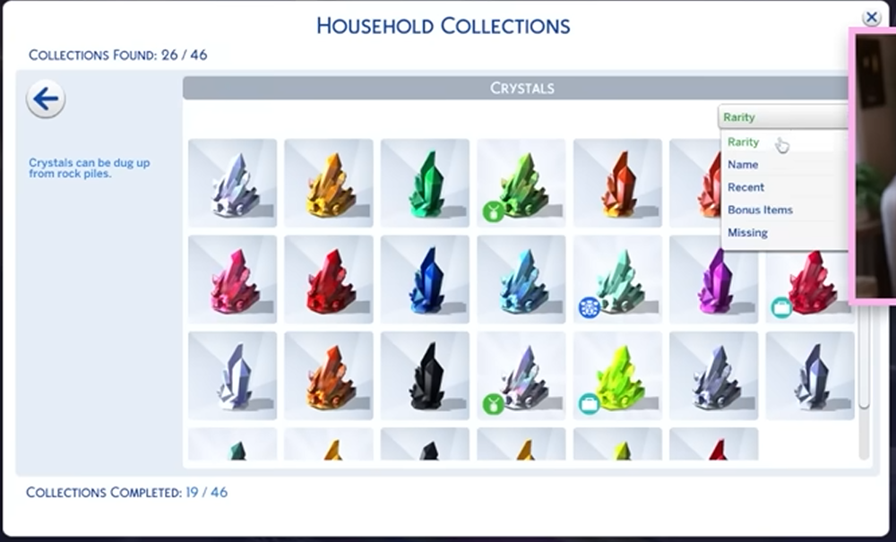
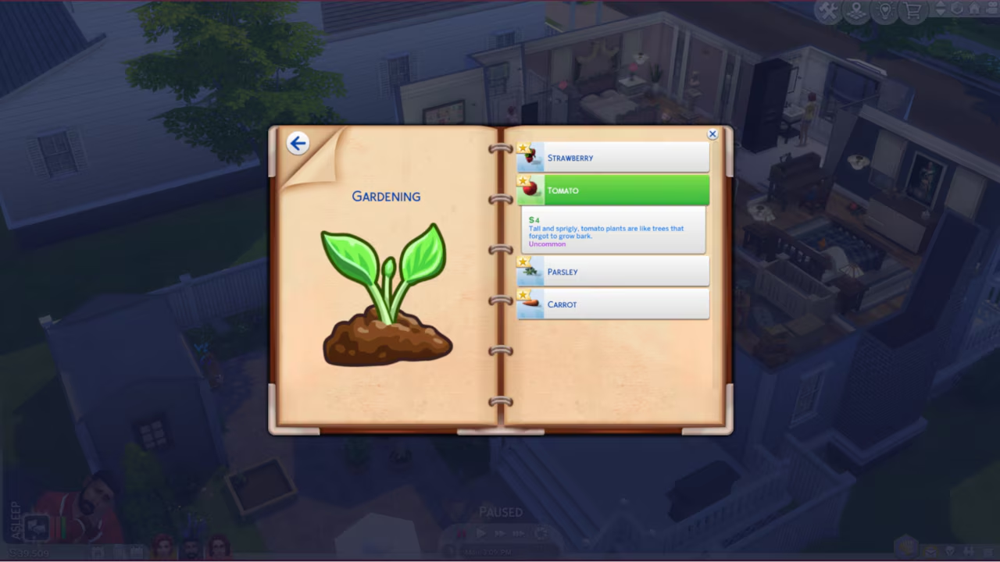
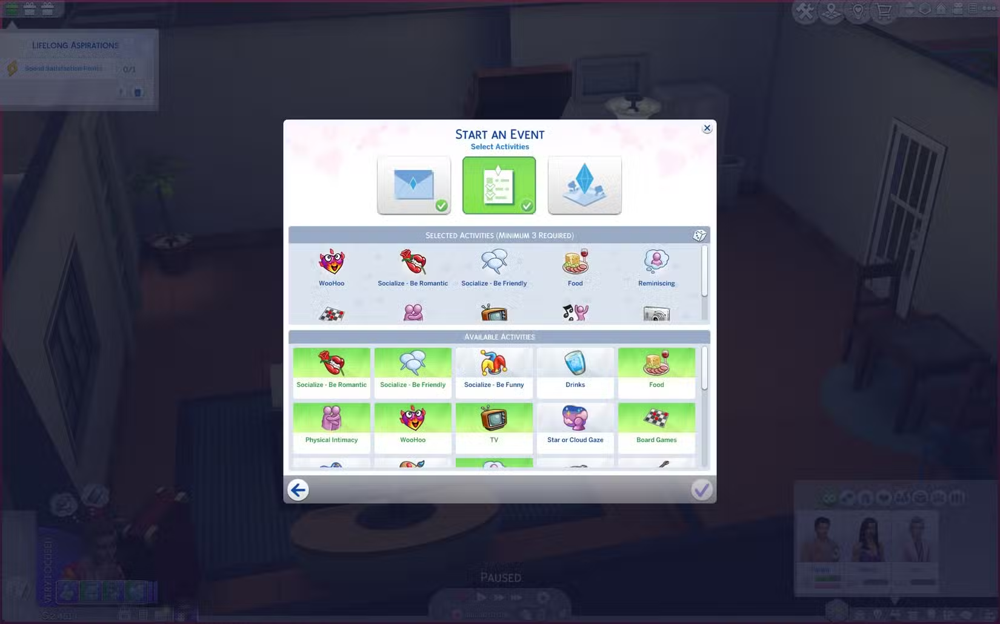

THE SIMS 4 · UICollections UI Update ↗
Explore the Collections UI update, including the before-and-after experience and implementation work.

THE SIMS 4 · UIExplore the Collections UI update, including the before-and-after experience and implementation work.

THE SIMS 4 · UIAuthored a technical design document and implemented a large refactor of the base-game Notebook system.

THE SIMS 4 · UI & GAMEPLAYDesigned and implemented Create a Date and Situation Rewards, improving legacy situation creation and telemetry.
Designed the fairy motives icon with feedback from UX on the visual direction.